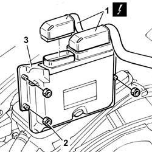
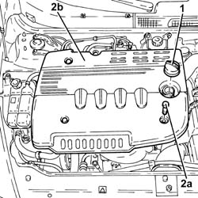
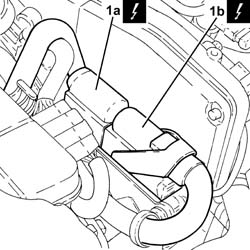
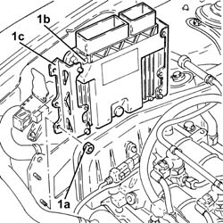

1060G80 ds electric injection control unit - r r
- Path
- Procedures > 10 ENGINE > 1060 DIESEL FUEL INJECTION > 1060G pressure pump electric control > 1060G80 ds electric injection control unit - r r
- Kind
- repair procedure (removal / refitting; the operation number is the code)
- Applies to
- engines: 1.9 JTD 8V, 1.9 JTD 16V; all production periods
- Interactive page
- https://sloeber94.github.io/elrnDB-a147/en/#/3025054
Applies to: engines: 1.9 JTD 8V; all production periods
 Removing
Removing
 Refitting
RefittingDisconnect the battery negative terminal.
1. Disconnect the electrical connection from the injection electronic control unit.
 | Name | Connector |
|---|---|---|
1 | Engine management ECU |
2. Undo the retaining nuts.
3. Remove the engine control unit from its seat on the strut.

Applies to: engines: 1.9 JTD 8V; all production periods
Refitting
RemovingFit the control unit in its seat.
Tighten the bolts retaining the support bracket to the bodyshell.
Connect the electrical connections to the control unit.
| Name | Connector |
|---|---|---|
- | Engine management ECU |
Connect the battery negative terminal.
Applies to: engines: 1.9 JTD 16V; all production periods
Removing
RefittingProceed with removal 7025A12 Engine front sound insulation COVER - R.R. .
Proceed with removal 7025A14 Bonnet LID - R.R. .
Ensure that the ignition key is in the OFF position, then disconnect the negative battery terminal (-).
| Name | Connector |
|---|---|---|
- | Battery |
1. Remove the engine oil filler cap.
2. Undo the fixing bolts (2a) and remove soundproofing cover (2b).
Tighten the engine oil filler cap.

Applies to: engines: 1.9 JTD 16V; all production periods
1. Disconnect the electrical connections (1a) and (1b) from the diesel electronic injection system control unit.
| Name | Connector |
|---|---|---|
1a | Engine management ECU |
| Name | Connector |
|---|---|---|
1b | Engine management ECU |

Applies to: engines: 1.9 JTD 16V; all production periods
1. Undo the nuts (1a) and remove the diesel electronic injection system control unit (1b) complete with slides (1c).

Applies to: engines: 1.9 JTD 16V; all production periods
Refitting
RemovingPlace the diesel electronic injection control unit complete with slides back in its housing with its bracket and secure it using the nuts.
Connect the electrical connections to the diesel electronic injection control unit.
Remove the engine oil filler cap.
Place the soundproof cover back in its housing and secure using the relevant bolts.
Tighten the engine oil filler cap.
Connect the negative (-) battery terminal.
Proceed with refitting 7025A14 Bonnet LID - R.R. .
Proceed with refitting 7025A12 Engine front sound insulation COVER - R.R. .
Topics linked from this page (6)
- 7025A12 Engine front sound insulation COVER - R.R.
- 7025A14 Bonnet LID - R.R.
- A1B Battery ( Connectors )
- M10 Engine management ECU
- M10A Engine management ECU ( Connectors )
- M10B Engine management ECU ( ENGINE )
Topics that link to this page (31)
- B13 ENGINE STARTS WITH DIFFICULTY'
- B20 ENGINE STARTS, AND CUTS OUT STRAIGHT AWAY
- D03 ENGINE NOT RUNNING SMOOTHLY / (IRREGULAR OPERATION)
- D04 ENGINE NOT RUNNING SMOOTHLY
- D05 ENGINE DOES NOT PRODUCE BEST PERFORMANCE
- D10 ENGINE IDLE IRREGULAR
- 0510A10 cylinder compression - check for loose spark plugs or injectors
- 1016B10 single cylinder head extension - change gasket
- 1016C10 cylinder head - r + r and replace gasket
- 1020D14 front crank shaft oil seal cover - r + r and replace seals for versions with oil pump on crank shaft, timing side
- 1020D18 front crank shaft cover oil seal - replace
- 1028H10 connecting rod and piston set - r r
- 1028H20 piston with connecting rod - r r
- 1032B10 toothed timing belt - r + r for timing adjustment or replacement
- 1032B46 toothed drive pulley - r + r
- 1032B52 toothed driven pulley (one) - r + r
- 1032C18 mobile timing system tensioner - r + r for 24 valve engines
- 1032C32 fixed timing system tensioner (one) r + r
- 1032D12 timing system protective cover(s) - r + r
- 1036B10 overhead camshaft - r r on vehicle
- 1036H57 hydraulic tappets all r r
- 1036C10 camshafts in cylinder head extension - r r - includes cylinder head extension replacement if necessary
- 1036L30 front oil seal of intake camshaft in cylinder head extension replace
- 1060E10 pressure pump - r r
- 1060E30 pressure pump pulley - r r
- 1060E40 supplementary pressure pump - r r
- 1060G22 cam angle sensor - r r
- 1072B10 inlet manifold - r + r and replace seal
- 1088C10 water pump - r + r
- 4130B32 power steering pump mount - r r
- 5040A76 tandem pipe for delivery and return from evaporator rr